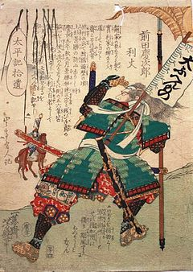

前田慶次
1533年?〜1605年?
出生を含めて謎に包まれた人物で、実父は織田信長の重臣・滝川一益の一族だったとされるが、確証はない。上杉景勝や直江兼続との関係は深く、関ヶ原の戦いの後は上杉軍とともに米沢に移り、1612年に没したとされている（没年については諸説あり）。奇怪な行動が多かったといわれ、特に“大ふへん者”と大書きされた旗を掲げて上杉の陣に参加したエピソードは有名だ。周囲の武士たちが「“大武辺者”とはずいぶん調子に乗っているじゃないか」と言うと、慶次は「そうじゃない、“大不便者”という意味だ！」と説明、人々をからかったという。